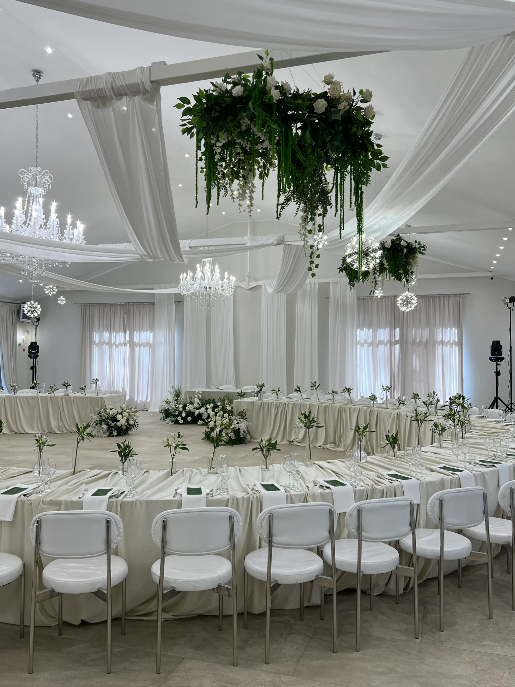
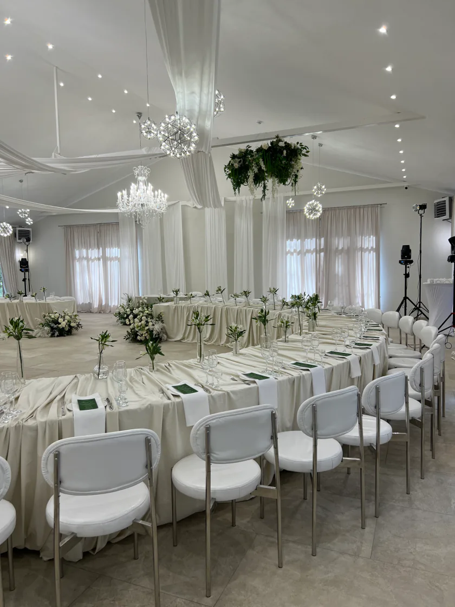
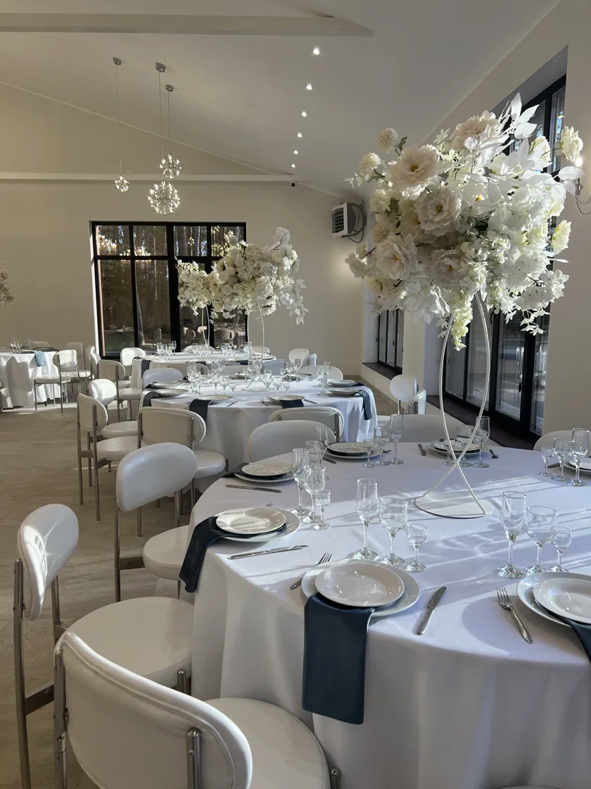
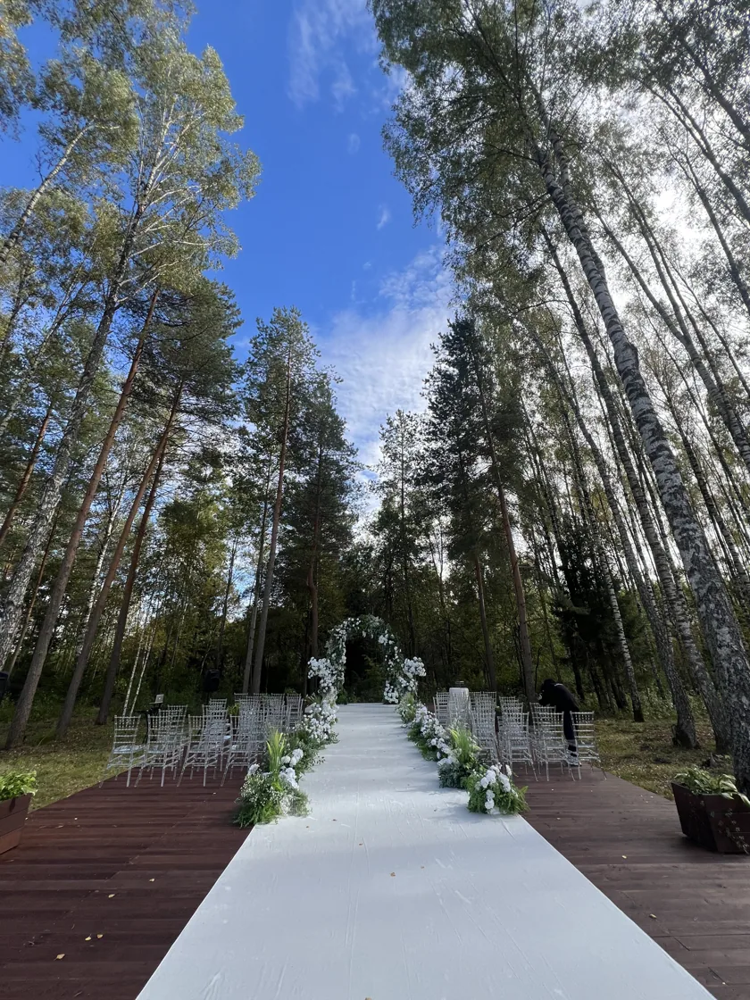
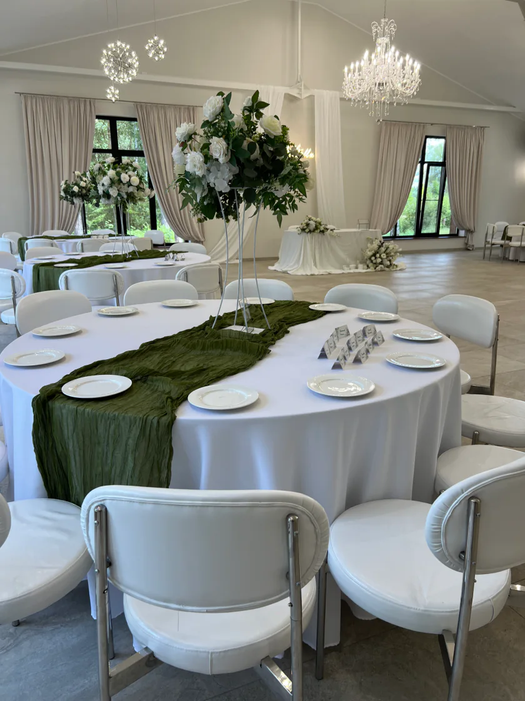
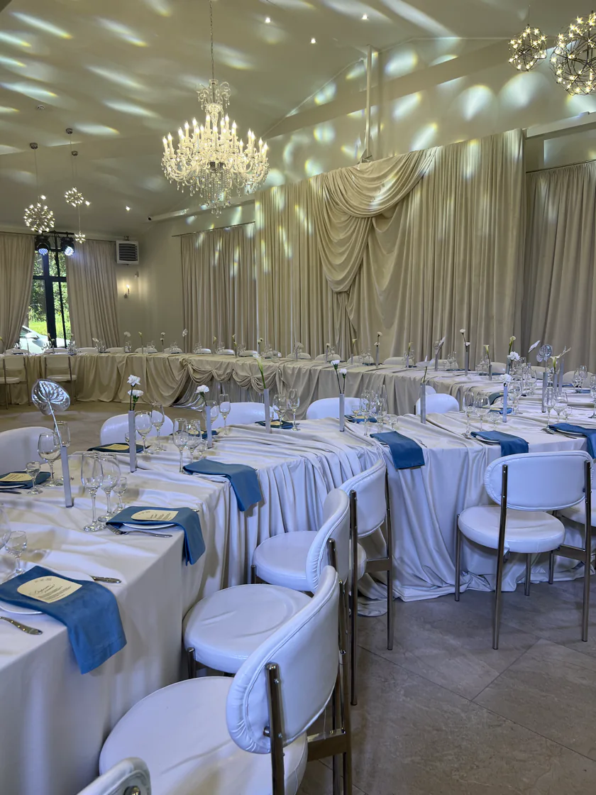
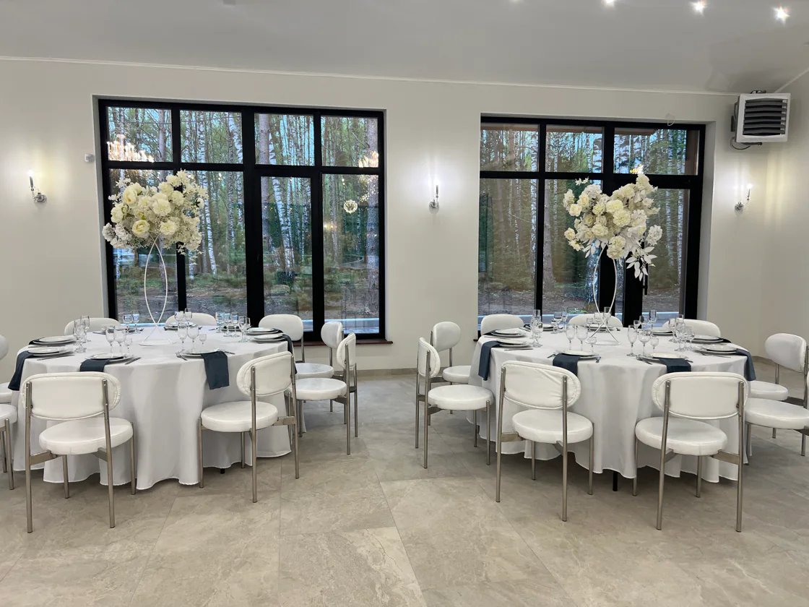
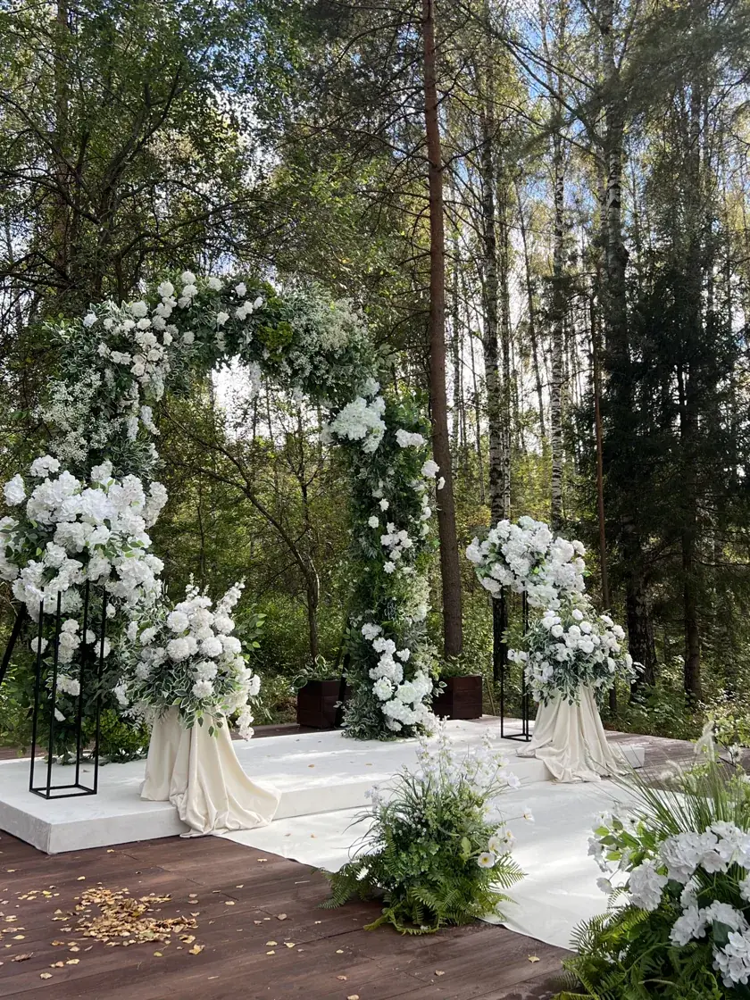
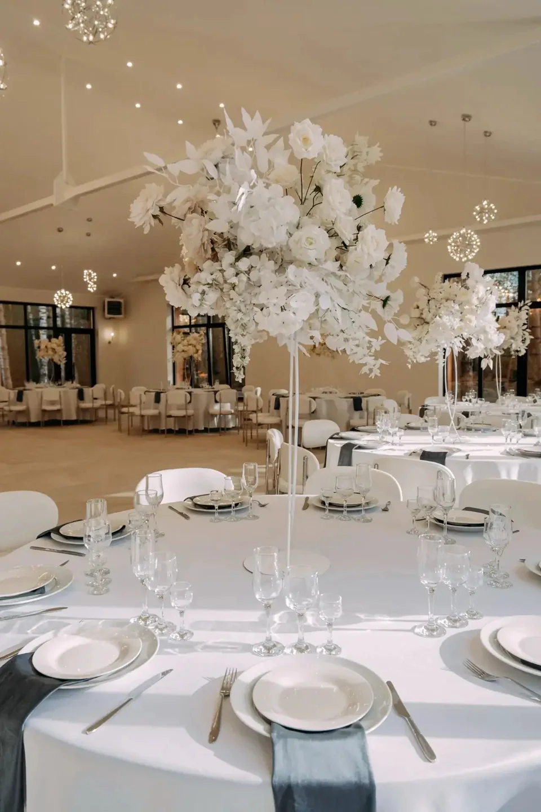

Церемония среди деревьев
Открытые площадки для выездной церемонии в окружении леса

Смоленская область, Телеши
Банкетный комплекс в окружении леса, пения птиц, аромата хвои и полевых трав с фуршетными зонами и площадками для выездных регистраций
О залах
Предлагаем Вам два светлых современных зала в лоне природы с европейской кухней и премиальным обслуживанием


Почему здесь удобно
Открытые площадки для выездной церемонии в окружении леса
Большие окна с видом на лес, хрустальные люстры, светлый текстиль и современные стулья
В галерее можно увидеть примеры рассадки с круглыми и прямоугольными столами
Форматы

Церемония на открытой площадке и банкет в зале

Юбилеи, дни рождения и встречи за общим столом

Корпоративные мероприятия вдали от городской суеты

Встречи, презентации и конференции в атмосфере загородного спокойствия
Галерея
Пространство и детали
Площадки для выездных регистраций с зонами для фуршетов и стульями для гостей

В галерее показаны примеры декорации залов

Позвоните, чтобы уточнить свободную дату и условия банкета или договориться о просмотре залов.